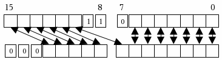

|
|||
| FRAMES NO FRAMES | |||
| Allgemeines |
|---|
Der CAN Bus dient als Kommunikationsnetz der Steuergeräte bei Märklin
Systems. Ziel ist, allen Geräten zur Steuerung einer Modellbahnanlage
ein einheitliches Kommunikationsmedium zur Verfügung zu stellen.
Mittels CAN Meldungen werden Steueraufgaben übermittelt.
Mittels CAN Streams werden Updates und Konfigurationsdaten übertragen.
Die Datenrate ist 250 KBit/s, die maximale Buslänge ist 100m.
| CAN Grundformat |
|---|
Das CAN Protokoll schreibt vor, dass Meldungen aus einer 29 Bit
Meldungskennung, 4 Bit Meldungslänge sowie bis zu 8 Datenbyte bestehen.
Die Meldungskennung wird aufgeteilt in die Unterbereiche Priorität
(Prio), Kommando (Command), Antwortbit (Response) und Hash. Die Kommunikation
basiert dabei auf folgendem Datenformat:
| Meldungskennung | DLC | Byte 0 | Byte 1 | Byte 2 | Byte 3 | Byte 4 | Byte 5 | Byte 6 | Byte 7 | |||
| Prio | Command | Resp. | Hash | DLC | D-Byte 0 | D-Byte 1 | D-Byte 2 | D-Byte 3 | D-Byte 4 | D-Byte 5 | D-Byte 6 | D-Byte 7 |
| 2+2 Bit | 8 Bit | 1 Bit | 16 Bit | 4 Bit | 8 Bit | 8 Bit | 8 Bit | 8 Bit | 8 Bit | 8 Bit | 8 Bit | 8 Bit |
| XX + XX | XXXXXXX | X | XXXXXXXXXXXXXXX | XXXX | XXXXXXXX | XXXXXXXX | XXXXXXXX | XXXXXXXX | XXXXXXXX | XXXXXXXX | XXXXXXXX | XXXXXXXX |
| Message Prio | Kommando Kennzeichnung | CMD/ Resp. | Kollisions-auflösung | Anzahl Daten-bytes | Daten | .... | ||||||
| Grundbeschreibung der Felder |
|---|
Bestimmt die Priorisierung der Meldung auf dem CAN Bus:
Prio 1: Stopp / Go / Kurzschluss-Meldung
Prio 2: Rückmeldungen
Prio 3: Lok anhalten(?)
Prio 4: Lok / Zubehörbefehle
Rest Frei
Die Priorisierung wird von den Teilnehmern nicht als Teil der Meldung verstanden, sondern dient nur zum Priorisieren der Meldung auf dem CAN Bus.
Bestimmt das vom Endgerät auszuführende, bzw. das ausgeführte Kommando.
Kommandowerte sind eindeutig definiert.
Kennwertbereiche für die Kommandowerte:
| Bereich | Anzahl | Start | Ende |
| Systembefehle | 1 | 0x00 | 0x00 |
| Verwaltung | 8 | 0x01 | 0x0A |
| Zubehör | 2 | 0x0B | 0x0D |
| Rückmeldungen | 3 | 0x10 | 0x12 |
| Software Update / Konfig | 6 | 0x18 | 0x1C |
| GUI Informationsübertragung | 3 | 0x80 |
Bestimmt, ob die CAN Meldung eine Anforderung oder eine Antwort auf eine vorhergehende Anforderung ist. Grundsätzlich wird eine Anforderung ohne ein gesetztes Response Bit gesendet. Sobald ein Kommando ausgeführt wurde, wird es mit gesetztem Response Bitzurückgesendet. Dabei wird der ursprünglichen Meldungsinhalt in der Antwort um eventuell angefragte Werte ergänzt. Jeder Teilnehmer am Bus der die Meldung ausgeführt hat bestätigt das Kommando.
Der Hash erfüllt eine Doppelfunktion:
Primär dient er zur Kollisionsauflösung der Meldungen und zur Sicherstellung der Kollisionsfreiheit zum CS1 Protokoll.
Sekundär kann er die Folgenummer einer Datenübertragung beinhalten.
Kollisionsfreiheit zum CS1 Protokoll:
Im CAN Protokoll der CS1 wird der Wert 6 für den "com-Bereich der ID", dies sind die Bits 7..9, d.h. Highest Bit im Lowest-Byte (0b0xxxxxxx) und die beiden Bits darüber (0bxxxxxx11), nicht benutzt. Diese Bitkombination wird daher zur Unterscheidung fest im Hash verwendet.

Kollisionsauflösung:
Der Hash dient dazu, die CAN Meldungen mit hoher Wahrscheinlichkeit kollisionsfrei zu gestalten. Dieser 16 Bit Wert wird gebildet aus der UID Hash. Berechnung: 16 Bit High UID XOR 16 Bit Low der UID. Danach werden die Bits entsprechend zur CS1 Unterscheidung gesetzt.
Jeder Teilnehmer am Bus hat den Hash empfangener CAN-Meldungen auf Kollisionsfreiheit zu pr�fen. Wird der eigene Hash empfangen, so ist ein neuer zu w�hlen. Dieser darf mit keinem weiteren empfangenen �bereinstimmen.
Folgenummer einer Daten�bertragung:
Wird der Hash zur Kennzeichnung der Paketnummer verwendet, so werden diese Bits bei der Berechnung der Paketnummer ausgeblendet. D.H. bei der 16 Bit Zahl werden die Bits 7 bis 9 ausgeblendet, die obersten 3 Bits sind 0.
Der Wertebereich verringert sich entsprechend auf 8192.
Eine Initiator eine Meldung muss Sorge daf�r tragen, dass die gew�nschte Aktion tats�chlich ausgef�hrt wird. Die Meldungen werden nicht gesichert �ber den CAN-Bus �bertragen. Der Empfang einer Meldung wird nicht best�tigt. Die Ausf�hrung eines Kommandos wird best�tigt, bzw nur durch das Senden der Best�tigungsmeldung quittiert. Fehlt diese Quittierung, ist davon auszugehen, dass die Aktion nicht ausgef�hrt wurde.
In der Kommunikation werden keine Sender + Empf�nger Adresse verwendet.
In der Kommunikation werden keine Remoteframes (=CAN-ID anfragen statt mit Daten senden) verwendet. Im allgemeinen sind die Teilnehmer so konfiguriert, dass diese nicht empfangen werden.
Byte-Order in den Meldungen ist immer Motorola Big Endian.
| �bertragung der CAN Kommandos via Ethernet |
|---|
Auf der CS2 kann - �ber das Setup / IP - Einstellungen - das Can-UDP-Gateway gestartet werden. Dort kann eine IP-Adresse (auch Broadcast) spezifiziert werden, an die das Gateway sendet. Die Portadressen sind �ber die Oberfl�che nicht einstellbar und werden fest auf die Ports 15731 und 15730 gesetzt.
Funktionsweise:
Wenn gestartet, lauscht das Gateway auf dem Ethernet
Empfangsport 15731. Es verwirft alle UDP-Pakete, die eine L�nge
ungleich 13 haben. Pakete der L�nge 13 werden als Can-Bus-Pakete
interpretiert: 4 Byte Can-Bus-Id (BigEndian oder Network-Order), 1 Byte
L�nge und 8 Byte Daten, die ggf. mit Nullbytes aufzuf�llen sind. Dieses
Paket wird dann als Can-Bus-Botschaft auf den Can-Bus gegeben. Nicht
abbildbare Bits oder Bytes auf dem CAN-Bus werden nicht beachtet und
sollten auf "0" gesetzt werden.
Umgekehrt liest das Gateway alle Can-Bus-Botschaften, wandelt
sie in analoger Weise in UDP-Pakete der L�nge 13 um und verschickt
diese an die spezifizierte IP-Adresse und den Sendeport (15730).
Beispielkonfiguration im lokalen Netz mit dem Netzwerksegment
192.168.2.0
CS2: (192.168.2.20)
empf�ngt auf Port 15731, sendet an die Broadcast-Adresse
192.168.2.255:15730.
PC1: (192.168.2.10) empf�ngt auf Port 15730 sendet an CS2
(192.168.2.20:15731)
PC2: (192.168.2.11) empf�ngt auf Port 15730 sendet an CS2
(192.168.2.20:15731)
Im Ethernet werden immer Pakete mit 13 Bytes �bertragen, unabh�ngig von der CAN - Datagramgr��e, da das CAN - Ethernet - Gateway Pakete anderer L�nge verwirft.
Die Bytes in der CAN- Botschaft werden folgenderma�en in dem
UDP-Paket eingepackt:
Bytes 1 bis 4 sind die
Meldungskennung.
Byte 5 entspricht dem DLC der CAN-Meldung.
Bytes 6 - 13 sind die entsprechenden Nutzdaten. Dabei nicht ben�tigte
Bytes sind mit 00 zu f�llen.
| Allgemeines |
|---|
Adressen im System
Der gesamte Adressraum hat
2**32 Adressen (0x0000 0000 - 0xFFFF FFFF), dieses sind rund 4
Milliarden Adressen. Diese werden auch als UID (Universal Identifyer)
bezeichnet. Je nach eingesetztem Protokoll hat jedoch eine UID eine
andere Bedeutung.
Definition der
Teilnehmerkennungen
Im System besitzt jeder
adressierbare Teilnehmer eine eindeutige 32 Bit Adresse.
Dabei werden folgende UID unterschieden:
Ger�te UID Eindeutig vergebene Universal
ID.
Loc ID
(=Local ID, nicht Locomotive ID) Aus dem Protokoll und der Adresse
berechnete Lokale ID.
MFX UID MFX Universal UID.
Bestimmte Ger�te - UID besitzen eine besondere Bedeutung:
Die UID 0x00000000 ist die Broadcastadresse. Signalisiert, dass mehrere
Teilnehmer denselben Befehl abarbeiten sollen.
Die UID 0xFFFFFFFF ist ung�ltig und steht f�r eine nicht initialisierte
UID des Endger�tes.
Einbindung bestehender
Gleisprotokolle, Loc-ID
Der Adressraum hat rund 4
Milliarden verf�gbare Adressen. Von diesem Adressraum wird ein Teil
(Adresse 0 - 65536) f�r die Einbindung bestehender Protokolle
verwendet: In diesem reservierten Bereich werden die bestehenden
Digitalprotokolle eingebettet, repr�sentiert durch die Loc-ID. Durch
Ihre Lage ergibt sich das Protokoll. Aufgef�hrt sind die unteren 2 Byte
der Loc-ID bei diesen Protokollen, die oberen sind = 0x0000.
So ergibt sich folgendes Adressschema:
|
Start Adresse |
End Adresse |
Protokoll |
| 0x0000 | 0x03FF |
MM1,2 Loks und
Funktionsdecoder (20 & 40 kHz, 80 & 255 Adressen) |
| 0x0400 | 0x07FF | Reserviert |
| 0x0800 | 0x0BFF | SX1 (Erweiterung) |
| 0x0C00 | 0x0FFF | Reserviert |
| 0x1000 | 0x13FF | Res. f�r MM1,2 Funktionsdecoder F1 - F4 (40 kHz, 80 & 255 Adressen) |
| 0x1400 | 0x17FF | Reserviert |
| 0x1800 | 0x1BFF | Frei f�r Privatanwender / Clubs |
| 0x1C00 | 0x1FFF | Reserviert |
| 0x2000 | 0x23FF | Reserviert f�r MM1,2 Lokdecoder (20 kHz, 80 & 256 Adressen) |
| 0x2400 | 0x27FF | Reserviert |
| 0x2800 | 0x2BFF | SX1-Zubeh�rartikel (Erweiterung) |
| 0x2C00 | 0x2FFF | Reserviert f�r Traktionen (interne GUI Kennungen) |
| 0x3000 | 0x33FF |
MM1,2
Zubeh�rartikeldecoder (40 kHz, 320 & 1024 Adressen) |
| 0x3400 | 0x37FF | Reserviert |
| 0x3800 | 0x3BFF | DCC-Zubeh�rartikel |
| 0x3C00 | 0x3FFF | DCC-Zubeh�rartikel |
|
|
|
|
| 0x4000 | 0x7FFF | MFX |
| 0x8000 | 0xBFFF | SX2 |
| 0xC000 | 0xFFFF | DCC |
Beispiel (Hex):
M�rklin Motorola mit Adresse 2: Basis: 00
00 00 00 Plus
Adresse: 00 00 00 02
MM2 Zubeh�r mit Adresse 3 Basis: 00 00
30 00 Plus
Adresse: 00 00 30 03
Zugeordnete Ger�tekennungen f�r R�ckmelder und Automatikfunktionen
Systeme mit einem S88 Bus
oder welche Automatisierungsfunktionen unterst�tzen, werden �ber einen
16Bit Ger�tekenner adressiert.
Die Kontaktkennung und die Automatisierungsfunktion wird somit �ber
eine Kombination von 16 Bit Ger�tekenner und 16Bit
Kontakt/Automatikkennung gebildet. �ber diese Adressierung werden alle
Kontakte und Automatikfunktionen angesprochen.
Die Master - Zentrale weist den Endger�ten die Kennung beim Systemstart
jeweis zu. Eine Resetfeste Speicherung findet in den Ger�ten nicht
statt.
�ber diese Ger�tekennungen wird erreicht, dass eine ausgefallenes Ger�t
im System ersetzt werden kann. Die gespeicherte und verwendete
Adressierung in Automatikfunktionen kann somit unver�ndert �bernommen
werden.
Der Master -Zentrale speichert sich eine Liste mit allen bekannten
Ger�ten im System, sowie deren NickNames als .cs2 Konfigurationsdatei.
Der Name kann sinnvoll vorbelegt werden, muss aber vom Anwender
ge�ndert werden k�nnen.
Nummernkreis / Adressen der
R�ckmeldekennungen und Automatikfunktionen
R�ckmeldekennungen beginnen
im Highbyte bei 0 bis maximal 63 Lowbyte im Bereich jeweils von 0 -
255.
Somit maximal 16.384 R�ckmeldekontakte pro Ger�t m�glich.
Der Wert 64 ist reserviert f�r SX1 R�ckmelder.
Automatikfunktionen beginnen im Highbyte bei "A" = 65. Im Lowbyte
beginnen per Konvention zur Zeit die Werte bei "1", dezimal 49 (0x31).
Abildung der Automatikfunktionen wie derzeitiges Memory: A1 = Erste
memory Funktion.
Adresssystematik erm�glicht Ger�te mit R�ckmeldung und
Automatikfunktionen (Wie die CS2).
Automatisierungsadressen /
R�ckmeldeadressen
Diese Adressen werden
zusammengesetzt aus der Ger�tekennung (H�her wertig) und der
entsprechenden R�ckmeldekennung bzw Automatikkennung.
Geschwindigkeiten:
Geschwindigkeiten im
gesamten System werden als 10 - Bit Werte behandelt. Dieser Wert ist
unabh�ngig vom real zur Lok (�ber das Gleis) gesendeten Wert. Der
verwendete Wertebereich sollte von 0 bis 1000 gehen, 0 entspricht einer
stehenden Lok, 1000 der maximalen Geschwindigkeit einer Lok.
Werte oberhalb 1000 (bis 1023) d�rfen vorkommen und sollten
keinen Empf�nger st�ren. Die Fahrgeschwindigkeit entspricht hierbei dem
Maximum.
Die Umrechnung in reale m�glich Fahrstufen ist anhand folgender
Rechenvorschriften m�glich:
Systemfahrstufe = 1 +
(Gleisfahrstufe - 1) * Schrittweite
Fahrstufen
| Anzahl | Schrittweite |
| 14 | 77 |
| 27 | 38 |
| 28 | 37 |
| 31 | 33 |
| 126 | 8 |
Gleisfahrstufe 1 ist somit immer auch Systemfahrstufe 1.
Gleisfahrstufe 11 ist bei:
14 Fahrstufen:
771
27 Fahrstufen: 381
28 Fahrstufen: 371
31 Fahrstufen: 331
126 Fahrstufen: 81
| Sequenzielle Programmierbefehle |
|---|
Einige Befehle des Gleis
Format Prozessor sind als
Sonderbefehle / Programmierbefehle realisiert, welche sequenziell
abgearbeitet werden. Nur ein Programmierbefehl kann in Abarbeitung
sein. Um sicherzustellen, dass diese Programmierbefehle auch
abgearbeitet wurden, muss auf die Best�tigung des Gleis Format
Prozessor gewartet werden.
Ein Programmierbefehl wird im Gleis Format Prozessor
zwischengespeichert und zur Abarbeitung �bergeben. Bei Stopp kann diese
Abarbeitung nicht stattfinden, da keine Gleistelegramme gesendet werden
k�nnen. Die Abarbeitung des Programmierbefehl steht in diesem Zustand
aus. Weitere Programmierbefehle werden verworfen.
Einige Programmierbefehle sind nicht auf die Abarbeitung von
Gleistelegrammen angewiesen. Bei diesen kann auch eine Abarbeitung bei
Stopp stattfinden.
Im Einzelnen handelt es sich um folgende Befehle:
| Befehl | Abarbeitung bei Stopp |
| Lok Discovery | Nein |
| MFX Bind | Nein |
| MFX Verify | Nein |
| Read Config | Nein |
| Write Config | Nein |
| Read Config Data | Ja |
| Statusdaten Konfiguration | Ja |
|
|||
| FRAMES NO FRAMES | |||